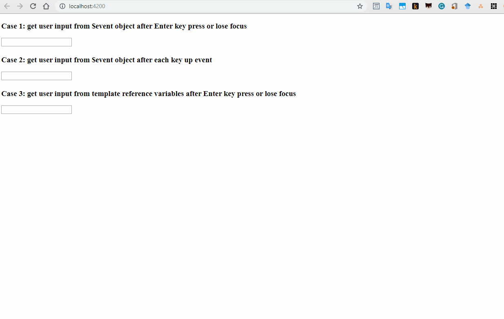

In this supplementary material, I will demonstrate three ways to get the user's data using event binding.
<input (change)="inputChange($event)">The code above will call the function inputChange() if the value of the input element gets changed. In other words, if the user presses the enter key of the input element loses focus (i.e. the user clicks outside the input element) app.component.ts
case1: string = "";
inputChange(event: any): void {
this.case1 += event.target.value + "|";
}
<input (keyup)="inputKeyUp($event)">In the code above, the inputKeyUp will get invoked each time the user releases a key on the keyboard. app.component.ts
case2: string = "";
inputKeyUp(event: any): void {
this.case2 += event.target.value + "|";
}
<input #myInput (change)="templateReferenceChange(myInput.value)">app.component.ts
case3: string = "";
templateReferenceChange(value: String): void {
this.case3 += value + "|";
}
So, app.component.html in one piece:
<h3>Case 1: get user input from $event object after Enter key press or lose focus</h3>
<input (change)="inputChange($event)">
<h4>{{case1}}</h4>
<h3>Case 2: get user input from $event object after each key up event</h3>
<input (keyup)="inputKeyUp($event)">
<h4>{{case2}}</h4>
<h3>Case 3: get user input from template reference variables after Enter key press or lose focus</h3>
<input #myInput (change)="templateReferenceChange(myInput.value)">
<h4>{{case3}}</h4>
and app.component.ts in one piece:
import { Component } from "@angular/core";
@Component({
selector: "app-root",
templateUrl: "./app.component.html",
styleUrls: ["./app.component.css"],
})
export class AppComponent {
case1: string = "";
case2: string = "";
case3: string = "";
inputChange(event: any): void {
this.case1 += event.target.value + "|";
}
inputKeyUp(event: any): void {
this.case2 += event.target.value + "|";
}
templateReferenceChange(value: String): void {
this.case3 += value + "|";
}
}
